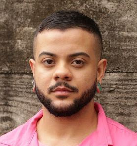

Formado em Recursos Humanos e Eletrônica, com cinco anos de experiência como Product Owner e um ano como Product Manager em uma startup do terceiro setor do tipo B2G. Diversos cursos na área de agilidade, foco em definições estratégicas baseadas em dados.
Certified Scrum Product Owner (CSPO) | Scrum Alliance (expirado em 2025)
Gestão em Recursos Humanos | UNIP | 2014 – 2016 | (Validação Portuguesa - Instituto Politécnico de Tomar)
Técnico em Eletrônica | ETEC Aristóteles Ferreira | 2012 – 2014
Inglês - Intermediário B2
Espanhol - Básico
OKR (Notion, Miro) | Roadmap | Backlog | Scrum | Kanban (Trello, Jira, Asana e Gitlab) | User Stories | CRM (Salesforce, RD Station e Pipedrive) | BI (Qlik) | Design (Figma) | SQL | C++ | HTML e CSS | JavaScript | Python